论文的出发点是一次系统的"稀疏扫描"实验:在 Llama-3.1-8B-Instruct 上按检索头排名(依据 Retrieval Head 方法,Wu et al., 2024)逐个把检索头替换成流式稀疏头,观察 6 类下游任务的表现如何随 $\Omega_{\text{MSR}}$ 变化。结果如下——这张表是全文最重要的动机证据:
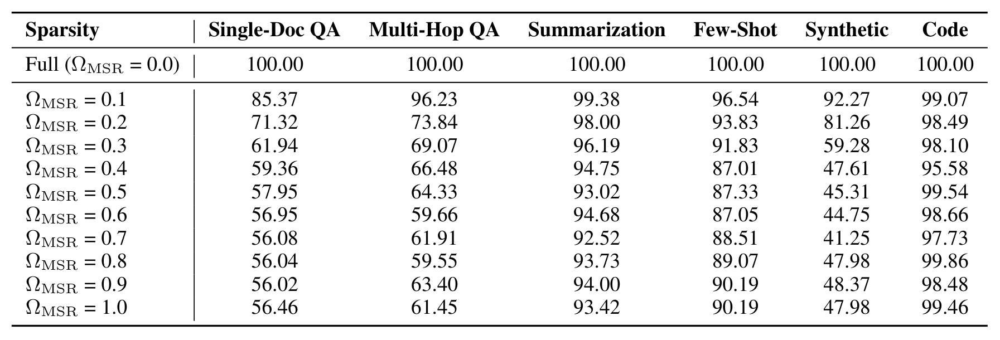
Table 7:Performance retention rates across various model sparsity ratios. The values represent the percentage of performance relative to the Full Attention baseline (Sparsity 0.0), where 100.00 indicates parity. Rows denote the model sparsity ratio, and columns denote the evaluation tasks.
按列读,任务的"抗稀疏"能力分成两个世界:摘要(Summarization)从 $\Omega_{\text{MSR}}$=0.1 到 1.0 始终保留 92%–99%,代码(Code)始终 ≥95%——这两类任务只需要粗粒度上下文,稀疏几乎无代价;单文档 QA 在 0.1 就掉到 85.4%,0.3 只剩 61.9%;多跳 QA 与 Synthetic 同样在 0.2–0.4 之间断崖。这就是"稀疏鲁棒 vs 稀疏敏感"两分法的直接证据:与其给每个任务学一个专属配置,模型只需要判断"这次要不要精细信息",二选一即可。报告 p.15
把同一批数据画成曲线,两个任务家族的形状差异一目了然:
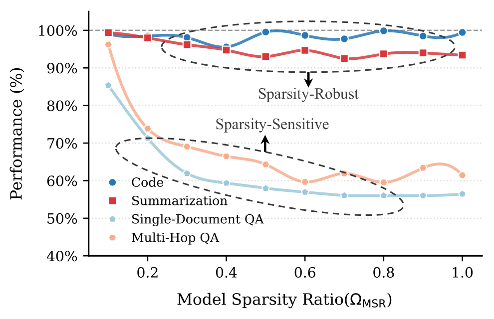
Figure 2:Trend of model performance as the hybrid model sparsity ratio ($\Omega_{\text{MSR}}$) increases. We report model performance as a relative percentage score with respect to that of FA.
蓝线族(稀疏鲁棒,如摘要)几乎水平:稀疏比一路加到 1.0,性能基本不动;红线族(稀疏敏感,如各类 QA)在中低稀疏比处就明显下坠。横轴的 $\Omega_{\text{MSR}}$ 从 0 到 1,相当于把全注意力模型逐步"抽稀"成纯稀疏模型——两条曲线的分叉位置,就是静态比例注定二选一的根源。报告 p.2
小结:观察的结论可以压缩成一句话——任务只分两类,路由只需二分。这为后面的方法定了形:不需要为每个任务学一套系数,只需要一个输入相关的二值决策(每个头 FA 还是 SA)。理论上,模型只要"判断这次输入是鲁棒型还是敏感型",就能把稀疏比放到合适的位置。
Figure 4:Comparison of our fused kernel with a Torch-based sequential implementation for layer-wise hybrid attention.
横轴为每条注意力层的模型稀疏比 $\Omega_{\text{MSR}}$(0.125–0.875),纵轴为加速比,四条线对应 16K/32K/64K/128K/256K 序列长度。两层信息:①同一稀疏比下,序列越长加速越明显(序列维并行是长上下文的主力,也正是碎片化伤害最大的地方);②同一长度下,稀疏比越高加速越大(被"省掉"的 SA 计算越多)。这张图是"kernel 融合不是锦上添花,而是混合头方案能否部署"的证据。报告 p.4
Table 1:Performance on LongBench-E (Bai et al., 2024). We report average performance (Perf.) and $\Omega_{\text{MSR}}$ per task category. The 1st and the 2nd performance in each comparison group are highlighted with bold font and underlined, respectively.
三个骨干各成一组,每组内所有方法共享同一骨干与训练数据。Elastic Attention 在三组里都拿下平均分第一:Qwen3-4B 48.08(骨干全注意力 48.45、DuoAttention 46.95)、Qwen3-8B 51.51(骨干 52.16、PruLong 51.34)、Llama 53.35(超过骨干的 53.28)。更值得注意的是每个任务列的 $\Omega_{\text{MSR}}$:模型把稀疏比按任务拉开——代码类 0.78–0.82、摘要 0.72–0.73、单/多文档 QA 0.63–0.68。合成任务与上下文学习也没有被牺牲。论文也如实报告:在 Code/Summ 等鲁棒任务上个别基线略高,原因一半来自本文分配了更高的稀疏比。报告 p.5
主结果 ②:RULER 与 LongBench-V2(长度外推 + 长程推理)
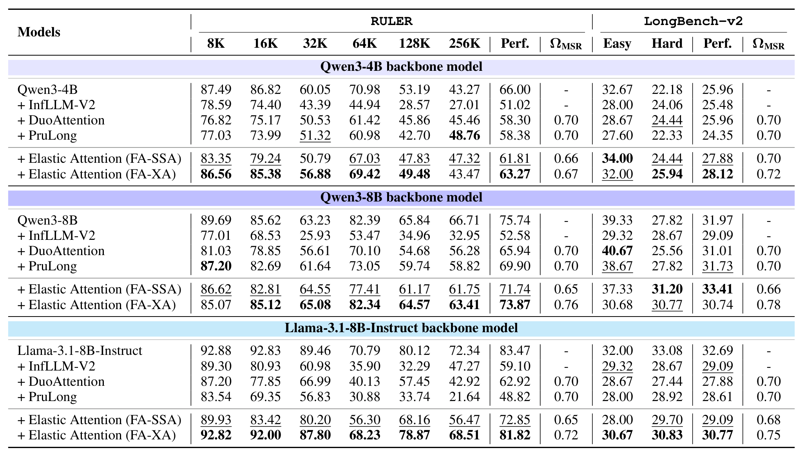
Table 2:Model performance on RULER (Hsieh et al., 2024) and LongBench-v2 (Bai et al., 2025). We report the average Perf. and $\Omega_{\text{MSR}}$.
训练最长 64K,评测外推到 256K。左组 RULER:FA-XA 在 4B 上把平均分做到 63.27(vs 骨干 66.00),8B 上 73.87(vs 75.74),Llama 上 81.82(vs 83.47);同价位上 DuoAttention 只有 58.30/65.94/62.92,PruLong 58.38/69.90/48.82——静态比例方法在超长外推区间掉得更快。右组 LongBench-V2:Elastic Attention 在两个 4B/8B 骨干上都反超全注意力骨干(27.88 / 33.41 vs 25.96 / 31.97),Llama 上基本持平。论文特别指出:8B 级别、上下文超过 64K 后,FA-XA 之所以最优,是因为它的 $\Omega_{\text{ESR}}$ 更低——保留了更多有效信息(见 Figure 8c 的公平口径)。报告 p.6
主结果 ③:数学推理与领域长文档
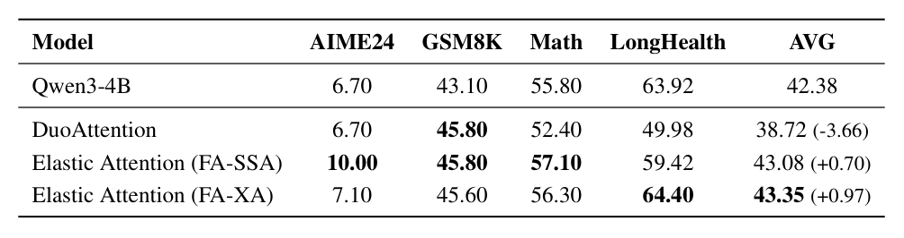
Table 3:Performance comparison across different benchmarks. The best results in each column are highlighted in bold. The values in parentheses indicate the performance gap relative to the Qwen3-4B baseline.
Qwen3-4B 骨干上的四项考核:FA-SSA 在三个数学基准上全面最好(AIME24 6.70→10.00、GSM8K 43.10→45.80、Math 55.80→57.10),FA-XA 在医学长文档 LongHealth 上拿到 64.40。平均分:骨干 42.38,FA-SSA 43.08(+0.70),FA-XA 43.35(+0.97),而 DuoAttention 因 LongHealth 大跌而平均 38.72(-3.66)。"稀疏=掉分"在这里被反例打破:适度的稀疏化反而像一种正则,把成绩抬了起来。报告 p.6
效率与有效稀疏:一张图看三个指标
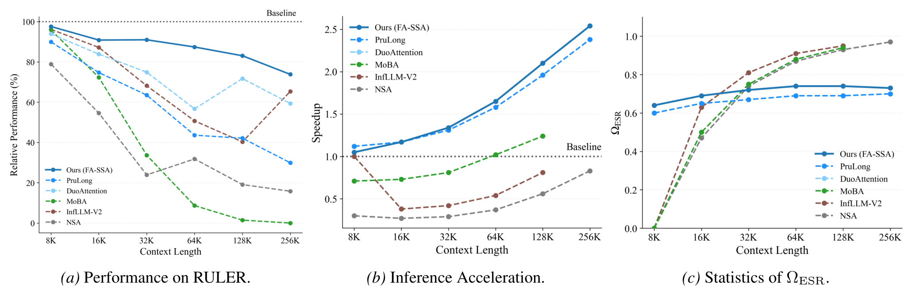
Figure 8:Comparison of performance and inference speedup on the RULER benchmark across different methods. We adopt Llama-3.1-8B-Instruct as the backbone model and compare with training-based methods (FA-SSA), as well as other cutting-edge sparse attention methods. We report $\Omega_{\text{ESR}}$, as it provides a fair comparison of the effective proportion of attended tokens across different approaches.
(a) 性能:各上下文长度分组,本文方法全面最好;(b) 加速:随上下文变长,本文的加速持续上扬——因为模型对更长的输入自动分配更高的稀疏比;(c) $\Omega_{\text{ESR}}$ 统计:训练式混合方法(如 DuoAttention)的有效稀疏比在各长度上基本恒定,而本文方法始终更低且随长度略有收缩——同样的"省算力"标称下,本文保留了更多实际参与的 token。论文还列举了两类竞争对手的系统性缺陷:NSA/InfLLM-V2 对 KV 头数有整除约束、与 Llama 头数不合;MoBA/InfLLM-V2 需预留预算做序列级特征,在 256K 处直接 OOM。报告 p.9
Table 5:Results of implementing retrieval heads with XA.
三骨干三个基准的平均分对比:Qwen3-4B 上全稀疏只差 0.87 分(46.80→45.93),几乎无损;Qwen3-8B(53.26→49.42)与 Llama(56.48→50.02)出现可测退化——但换来的是整模型无 FA 头的加速结构。论文把这条曲线定义为"极端效率区间":精度与吞吐在此明确互换,选择权交给部署方。报告 p.8
另一条扩展线是打破"骨干冻结"约束:用 LoRA 与全参微调继续预训练,看路由能否与骨干协同进化。
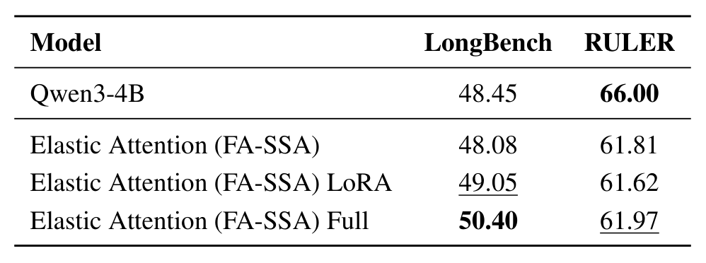
Table 6:Performance comparison of different tuning methods on LongBench and RULER. The best results are bolded, and the second-best are underlined.
Qwen3-4B 上:冻结骨干 48.08 → LoRA 49.05 → 全参微调 50.40(LongBench);RULER 上三者几乎持平(61.81 / 61.62 / 61.97)。释放更多参数能提升通用任务成绩,而合成检索性能(即长上下文能力)不降——说明 Elastic Attention 与继续预训练兼容,不会牺牲预训练模型已有的检索头。报告 p.8
Figure 7:Comparison of performance and test-time $\Omega_{\text{MSR}}$ among different training sparsity target $t$ settings. The bar chart denotes the performance and the line chart denotes $\Omega_{\text{MSR}}$ in each task.
柱=各任务性能,线=实测 $\Omega_{\text{MSR}}$。$t_{\text{sen}}$ 越小,任务间的稀疏比分化越明显(约束越松,模型越敢按任务拉开档位);$t_{\text{sen}}$ 低到 0.4 时整体性能甚至能超过全注意力骨干。但论文最终仍选 $t_{\text{sen}}=0.7$——从推理效率角度,"留出稀疏空间"比"多挤一点分数"更符合方法初衷。这条曲线也说明:目标值 $t$ 不是硬指标,而是给模型的建议区间,实测 $\Omega_{\text{MSR}}$ 并不严格等于 $t$。报告 p.7
Figure 5:Visualization of task representation similarity. (Left) before Task MLP, the pooled hidden states exhibit high pairwise cosine similarity across different tasks; (Right) after passing through the Task MLP, the inter-task similarity significantly decreases.
左:池化隐状态在不同任务之间高度相似(表征还没"分家");右:过完 Task MLP 后任务间相似度显著下降。也就是说,Task MLP 干的是"把任务特征从通用隐状态里解耦出来",为后面的 Router MLP 提供可判别的输入。附录 G.1 用更严格的 pairwise conditional rescaling 度量给出同一结论:报告 p.7
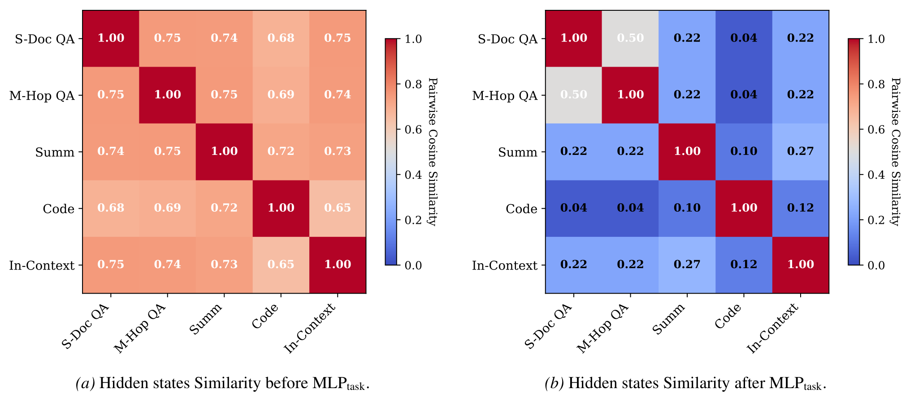
Figure 9:Pairwise cosine similarity of routing representations $z_{\text{task}}$. The prevalence of near-zero scores ($M_{uv}\approx 0$) indicates that the router maps distinct tasks to orthogonal subspaces on the local manifold. This confirms that the model implicitly disentangles task semantics into independent directions without supervision.
(a) MLP 前、(b) MLP 后:大量任务对的相似度趋近于 0,意味着 Task MLP 把不同任务映射到了局部流形上的近似正交子空间。注意这一切没有任务标签监督——纯粹是"稀疏-性能"目标逼出来的副产品。这是全文最有信息量的一张"机制图"。报告 p.22
路由模式长什么样
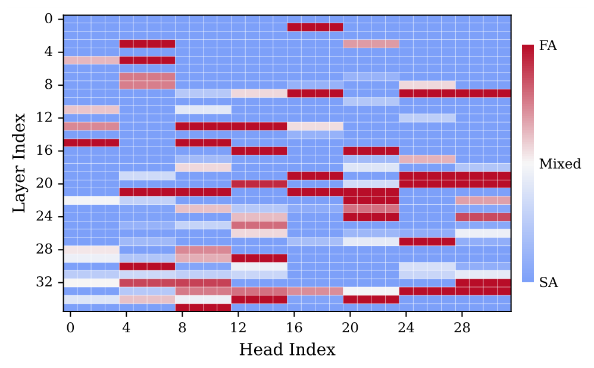
Figure 6:Overview of routing activation frequency of each head in Qwen3-4B. Red indicates heads that are consistently routed to FA (i.e., retrieval heads) across all 6 tasks in LongBench-E, while blue denotes heads that are consistently routed to SA.
横轴=头序号,纵轴=层序号,颜色=6 个任务上被路由到 FA 的频率(红=总是 FA,蓝=总是 SA,浅色=随任务切换)。可以看到:①一小撮头(集中在中高层)稳定走 FA——与 Retrieval Head 论文发现的"检索头"位置一致;②有部分头随任务切换(浅色),这正是"弹性"发生的地方;③其余头稳定走 SA。路由不是随机噪声,而是复现了已知的模型结构。报告 p.7
换一个模型家族,模式却不一样——这是论文里少见的跨模型机制发现:
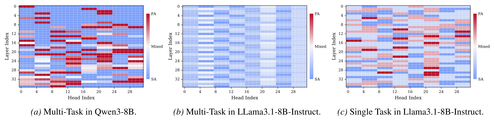
Figure 11:Extended Head Robustness Analysis. Similar to Figure 6, these heatmaps visualize the frequency of full-attention activation for each head. (a) and (b) show the multi-task global robustness for Qwen3-8B and Llama3.1-8B-Instruct, respectively. (c) presents the robustness analysis for Llama3.1-8B-Instruct in a single-task setting.
(a) Qwen3-8B:存在一批"跨任务恒定激活/恒定稀疏"的头——任务无关的注意力拓扑;(b) Llama-3.1-8B 的多任务聚合视图里找不到恒定激活的头;(c) 但拆到单任务看,强激活头是存在的,只是随输入动态迁移。结论:Qwen3 依赖固定的检索头,而 Llama-3.1 会按任务重新分配注意力资源——同一套路由机制,在两个模型家族里学出了不同的策略。报告 p.22
训练动态:路由是"学"出来的
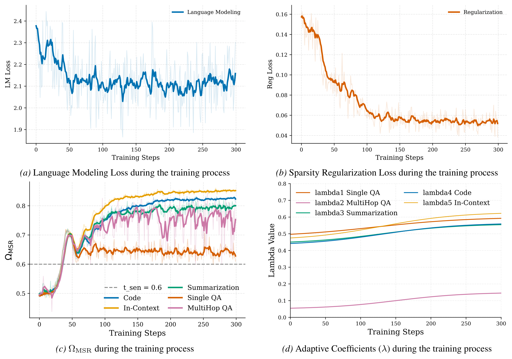
Figure 13:Decomposition of Training Objectives for Elastic Attention. We visualize the training dynamics of the Attention Router, separating the total loss into (a) the primary language modeling objective and (b) the sparsity regularization term. Subfigures (c) and (d) illustrate the task-level differentiation in sparsity allocation ($\Omega_{\text{MSR}}$) and adaptive coefficients ($\lambda$), demonstrating how the model automatically distinguishes between sparsity-robust and sparsity-sensitive tasks.
(a) 语言建模损失快速下降并稳定在 ~2.1——注入稀疏没有妨碍骨干收敛;(b) 稀疏正则损失在前 100 步从 ~0.16 降到 ~0.06——Gumbel 松弛把路由器"推"向目标稀疏比;(c) 各任务的 $\Omega_{\text{MSR}}$ 从中性初始化出发自动分化:代码/上下文学习收敛到 ~0.80–0.85(接近甚至超过 $t_{\text{sen}}$ 方向),Q&A 则停在更接近目标线的位置;(d) 拉格朗日乘子的演化:$\lambda_5$(上下文学习)涨得最猛——模型把"满足这个任务的密度要求"排在了最优先。300 步训练全程稳定。报告 p.24
路由输入要多长才够
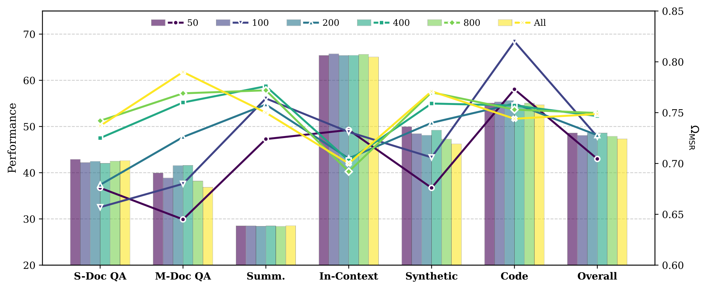
Figure 14:Impact of router input truncation length on downstream performance and $\Omega_{\text{MSR}}$. We compare varying truncation budgets ($L\in\{50,\dots,800,\text{All}\}$) applied to the concatenation of the sequence's prefix and suffix. Results indicate that increasing the input length beyond 100 tokens yields negligible performance gains and may degrade router selectivity due to a lower signal-to-noise ratio.
把路由输入的首尾预算从 50 加到 800、再到全序列:性能在 100–200 token 处就饱和,继续加长不再有收益,某些任务(如多文档 QA)反而变差——因为文档正文的语义方差把"系统提示 + 用户问题"的信号稀释了。这是"边界池化 100+100"配置的直接实验依据,也解释了 Figure 10 里路由延迟为什么与序列长度无关。报告 p.25
长度外推与稀疏动态
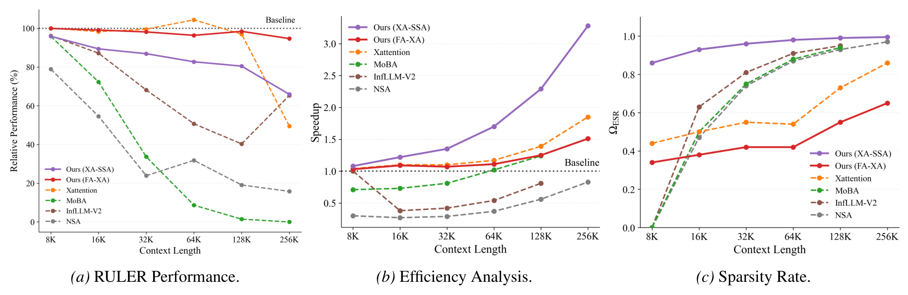
Figure 12:Analysis of length extrapolation capability and sparsity dynamics on the RULER benchmark (8K-256K). We adopt Llama-3.1-8B-Instruct as the backbone model to compare our Elastic Attention variants (FA-XA and XA-SSA) with including MoBA and NSA.
(a) 性能:上下文拉到 256K,MoBA 与 NSA 灾难性退化(接近 0),FA-XA 仍保住 68.51,XA-SSA 47.68——注意它还明显高于同源的 XAttention 基线(35.82);(b)(c) 效率-稀疏联合视图:NSA/InfLLM-V2 的稀疏率虽高(>0.95)但加速不到 1.0×(动态选择或 kernel 约束把收益吃掉了),而 XA-SSA 在 ~0.995 的极端稀疏下拿到 3.28× 加速,FA-XA 以 1.51× 的温和加速保留更多信息。论文把这称为"更优的帕累托前沿":两种配置分别守住精度端与吞吐端。报告 p.23
Table 11:Detailed configuration for the RULER benchmark evaluation. We evaluate across exponentially increasing context windows up to 256k tokens.
RULER 的评测口径:8K–256K 六个长度;每个"任务×长度"对 50 个样本;任务含 NIAH 检索系列(single/multikey/multiquery/multivalue 各 1–3 档)与 QA/抽取系列(qa1/qa2、fwe)。这些细节决定了横向对比的可比性,报告得比较完整。报告 p.20
LongBench-E 逐任务明细
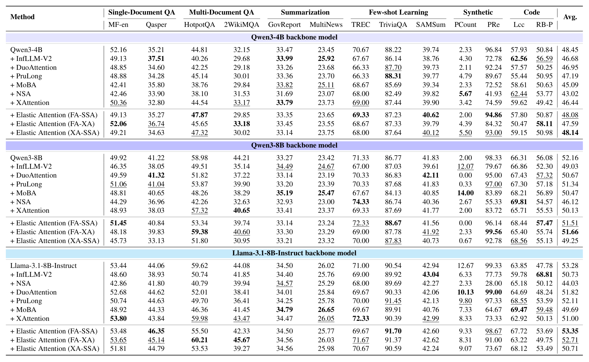
Table 9:LongBench-E results comparison. The 1st and the 2nd performance in each comparison group are highlighted with bold font and underlined, respectively.
全部 13 个子任务(MF-en、Qasper、HotpotQA、2WikiMQA、GovReport、MultiNews、TREC、TriviaQA、SAMSum、PCount、PRe、Lcc、RB-P)的分数,三个骨干分组对比 InfLLM-V2 / DuoAttention / PruLong / MoBA / NSA / XAttention 与 Elastic 的两种设置。读法建议:先看自己关心的任务列,再回头看该组平均。报告 p.18
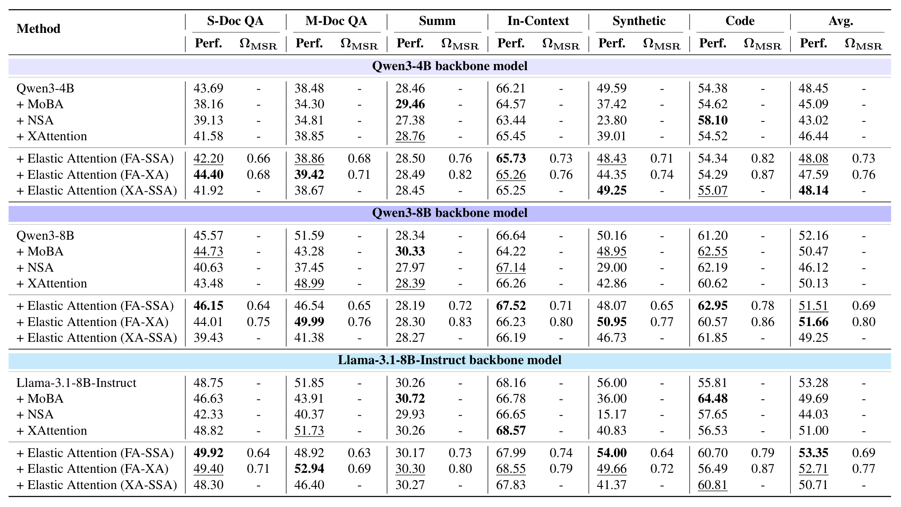
Table 10:Performance on LongBench-E. We report average performance (Perf.) and $\Omega_{\text{MSR}}$ per task category. The 1st and the 2nd performance in each comparison group are highlighted with bold font and underlined, respectively.
与 Table 1 同构的补充版,额外纳入 MoBA、NSA 与 XA-SSA(全稀疏),并按类目给出 $\Omega_{\text{MSR}}$。可以直观看到 Elastic 的稀疏比在类目之间的差异(如 Qwen3-4B:QA 0.66–0.68、代码 0.82、合成 0.71),而所有基线方法要么恒为 0.70、要么不定义 $\Omega_{\text{MSR}}$。报告 p.19
Table 13:Performance comparison of different attention methods on RULER subtasks. Tasks are grouped logically to highlight performance variations.
RULER 子任务拆解(NIAH single/multikey/multi 的 Val/Qry、QA1/QA2、FWE)。一个有意思的模式:在 Llama 骨干上,Elastic(FA-XA)在 FWE(QA 类)上反而高于 Baseline(81.89 vs 82.11 基本持平,而 DuoAttention 只有 78.22)——稀疏化没有牺牲需要精细检索的子任务,掉分主要发生在最难的 NIAH multikey 多档。报告 p.21
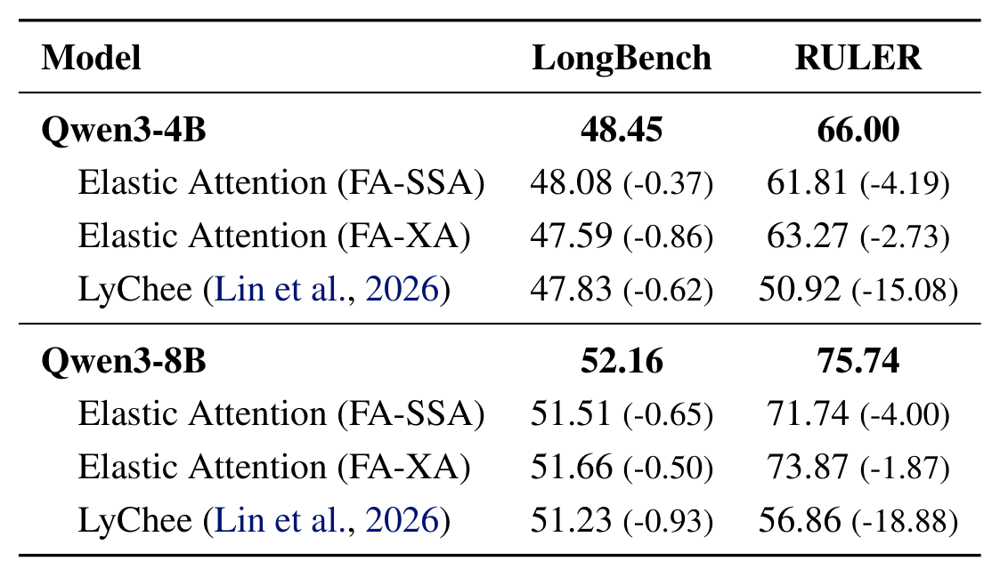
Table 14:Performance comparison on LongBench and RULER. The performance drop relative to the respective base model is shown in parentheses.
与同期混合头工作 LyChee(Lin et al., 2026)的正面对比:LongBench 上两者互有胜负(4B: -0.37 vs -0.62;8B: -0.65 vs -0.93),但 RULER 上差距拉开——Elastic 掉 4.19/4.00,LyChee 掉 15.08/18.88。长上下文外推是这类方法的分水岭。报告 p.21
定性案例:三场"细节决定成败"的对比
附录 H 给了三个真实案例,展示稀疏化误差会以什么形式出现——共同的失效模式是丢掉了关键细节,然后用通顺的话把它补圆:
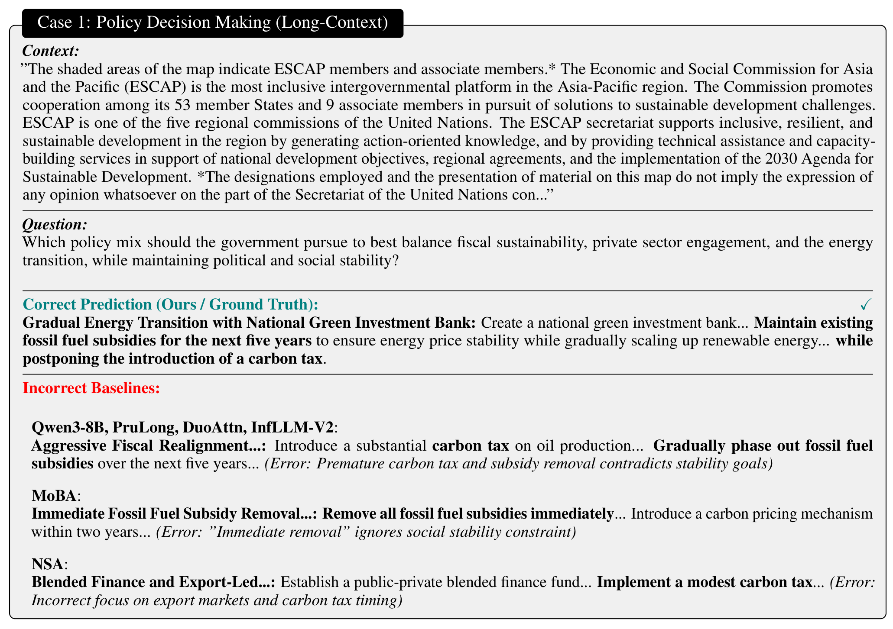
Figure 15:Qualitative comparison on a complex policy reasoning task. Our model correctly identifies the 'Gradual' approach required for stability, whereas baselines hallucinate 'Aggressive' or 'Immediate' measures that contradict the stability constraint.
案例 1(政策推理):问题要求在"财政可持续、社会稳走、能源转型"间找平衡。正确答案是"渐进式绿色投资 + 保留化石能源补贴五年 + 推迟碳税";Qwen3-8B / PruLong / DuoAttn / InfLLM-V2 给出"激进碳税 + 五年内退出补贴",MoBA 干脆"立即取消全部补贴"——都违反了"社会稳定"这一约束。Elastic Attention 抓住了"渐进"这个关键词。报告 p.26
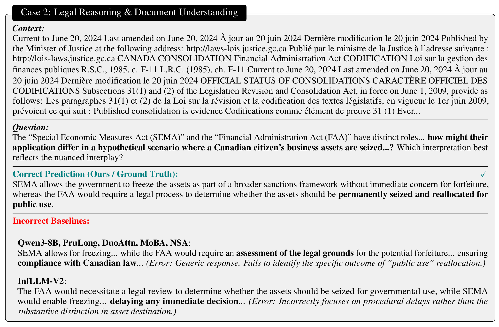
Figure 16:Comparison on a bilingual legal document. Our model accurately extracts the specific legal provision regarding asset reallocation for public use (FAA), whereas baselines provide generic descriptions of “legal assessments” or “compliance” without specific details.
案例 2(双语法律):问 SEMA 与 FAA 在"资产被扣押"场景下的适用差异。正确回答需要点出 FAA 的"为公共用途重新分配";基线们给出的是"需要法律评估""确保合规"这类正确但无信息的泛泛之谈——典型的"稀疏丢失细节后靠语言先验补全"。报告 p.27
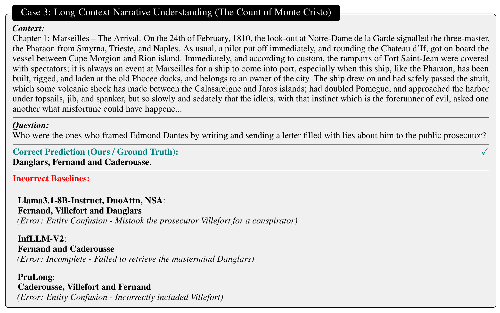
Figure 17:Qualitative comparison on narrative entity tracking. The task requires identifying the specific characters who conspired to frame the protagonist. Our model accurately retrieves the correct trio, whereas baselines consistently hallucinate “Villefort” (the public prosecutor) into the group, failing to distinguish between the plotters and the judicial figure involved later.
案例 3(长篇小说实体追踪,约 5 万 token 的《基督山伯爵》):问"谁写了诬告信陷害主角"。正确答案是 Danglars、Fernand、Caderousse 三人;多个基线把后文才出场的检察官 Villefort 混进共谋者名单,InfLLM-V2 还漏掉了主谋 Danglars。实体关系细节正是稀疏化最容易伤到的部分——这也是 Elastic Attention 在敏感任务上把稀疏比压到 0.63–0.68 的原因。报告 p.28
编者注(论文笔误):附录 H 正文写"In Table 15, 16, and 17, we present representative model outputs",但这三个编号对应的实际是 Figure 15/16/17(定性案例),论文里不存在 Table 15–17。不影响结论,记录在此以免读者对着表格编号找半天。
Glossary
术语速查
阅读中遇到缩写,可随时回到这里;正文里带虚线下划线的缩写悬停即可见释义。
阅读术语表(正文中带虚线下划线的缩写悬停可见)
缩写
全称
一句话解释
FA
Full Attention
全注意力:每个 token 关注全部历史 token,精度的上限、成本的上限
SA
Sparse Attention
稀疏注意力:只保留一小部分 K/V 计算,省算力但可能丢细节
Ω_MSR
Model Sparsity Ratio
模型稀疏比:稀疏头占全部 KV 头的比例(定义 2.1)
Ω_ESR
Effective Sparsity Ratio
有效稀疏比:把每个头的剪枝率 ρ 也计进去的稀疏度(定义 2.2)
SSA
Streaming Sparse Attention
流式稀疏注意力:attention sink + 滑窗的静态稀疏模式(Xiao et al., 2024b)
XA
XAttention
训练无关的块稀疏注意力,用反对角线打分挑关键块(Xu et al., 2025)
BSA
Block-Sparse-Attention
块稀疏注意力内核,本文用它实现"混合头单次 launch"(Guo et al., 2024)
STE
Straight-Through Estimator
直通估计器:前向用硬决策、反向把梯度传给软分布
Gumbel-Softmax
—
用 Gumbel 噪声 + 温度把离散采样变成可导采样
DuoAttention
—
静态混合头基线:检索头走 FA、流式头走 SSA(Xiao et al., 2025)
PruLong
—
训练式 KV 剪枝基线(Bhaskar et al., 2025)
InfLLM-V2
—
可切换稠密/稀疏的注意力基线,短上下文用 FA(Zhao et al., 2025)
MoBA / NSA
Mixture of Block Attention / Native Sparse Attention
DuoAttention(Xiao et al., 2024a; 2025)、PruLong(Bhaskar et al., 2025)
把静态比例改为输入自适应的逐头路由
稀疏头计算
Streaming Sparse Attention(Xiao et al., 2024b)、XAttention(Xu et al., 2025)
作为 SA 侧的两种可插拔实现(FA-SSA / FA-XA / XA-SSA)
稀疏 kernel
Block-Sparse-Attention(Guo et al., 2024)
把路由决策下沉为内核元数据,混合头单次 kernel launch
路由机制
MoE gating(Shazeer et al., 2017)
"选专家"改为"选注意力模式",粒度落在每个 KV 头
连续松弛与梯度
Gumbel-Softmax(Jang et al., 2016)、STE(Bengio et al., 2013)、重参数化技巧(Bhaskar et al., 2025)
硬路由前向 + 软分布反向,配温度退火
约束优化
拉格朗日乘子法(梯度上升更新 $\lambda$)
带上下界的非紧稀疏约束,允许任务间分化
骨干模型
Qwen3(Yang et al., 2025)、Llama 3(Grattafiori et al., 2024)
三个 4B/8B 骨干,全部冻结
训练数据
ChatQA2(Xu et al., 2024)、MuSiQue(Trivedi et al., 2022)、CoLT-132K(Li et al., 2025)、GovReport(Huang et al., 2021)、XSum(Narayan et al., 2018)
合成 0.74B token 的混合训练集,覆盖两类任务
评测与基线
LOOM-Eval(Tang et al., 2025);DuoAttention / PruLong / InfLLM-V2(Zhao et al., 2025)/ MoBA(Lu et al., 2025a)/ NSA(Yuan et al., 2025)/ LyChee(Lin et al., 2026)